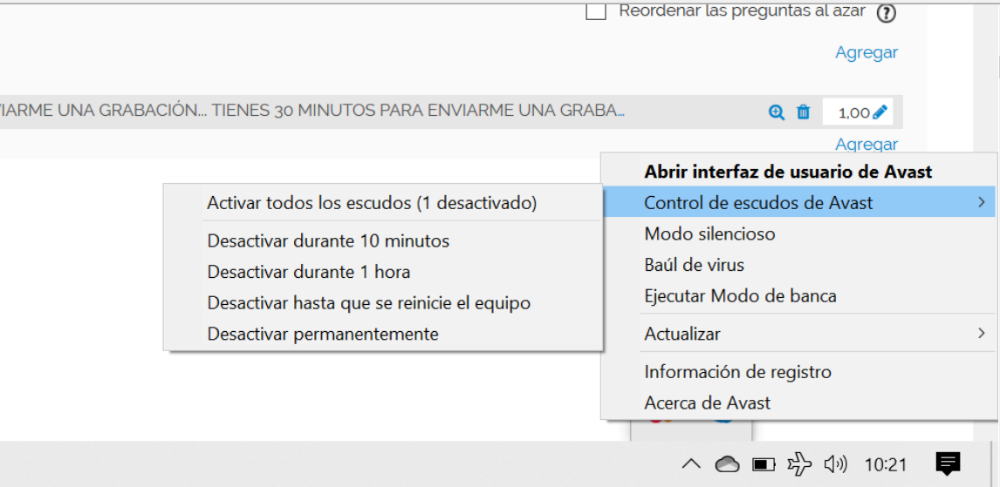

Se ha comprobado en las ultimas horas que una actualización del antivirus AVAST, bloquea el acceso a la Plataforma de Formación a Distancia.
Si os aparece el siguiente mensaje, "hemos anulado de forma segura la conexión de fp.distancia.aragon.es porque estaba infectada por URL:Blacklist", no es un error de la plataforma, sino del antivirus, por lo que la única solución que podemos dar, es que durante la realización del examan se desactive el antivirus y se vuelva a activar a su finalizacion.
Os envíamos imagen, es muy sencillo, simplemente clickando el botón derecho en la parte inferior derecha de vuestros ordenadores, en el icono de AVAST: 
Sí, esta plataforma está pensada para que sea accesible desde cualquier lugar donde haya un equipo con conexión a Internet.
Probablemente tendr´s que deshabilitar el bloqueo de elementos emergentes, o habilitar los pop-ups si tienes instalada alguna barra de herramientas (Google, Yahoo, MSN...). También tendrás que tener instalado Adobe Flash Player y la máquina virtual de Java. En el apartado Software necesario puedes encontrar los enlaces para descargar e instalar estos programas.
Solicita un nuevo cambio de contraseña ¿Olvidó su nombre de usuario o contraseña?. Visualiza el vídeo tutorial: 02 Acceso plataforma:
Esto ocurre porque en ese momento se "registra" en la plataforma el seguimiento sobre esa unidad que acabas de dejar.
Para plantear cualquier duda que te surja, la podrás consultar utilizando las diferentes herramientas (foros, correo) disponible en cada curso.
Al final de cada tema, en el apartado: Recursos, el archivo que contien el nombre"completa" es la vesrión impromible de ese tema.